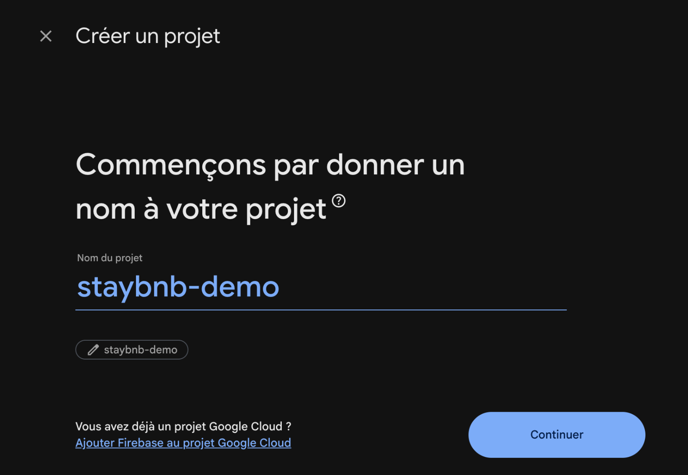
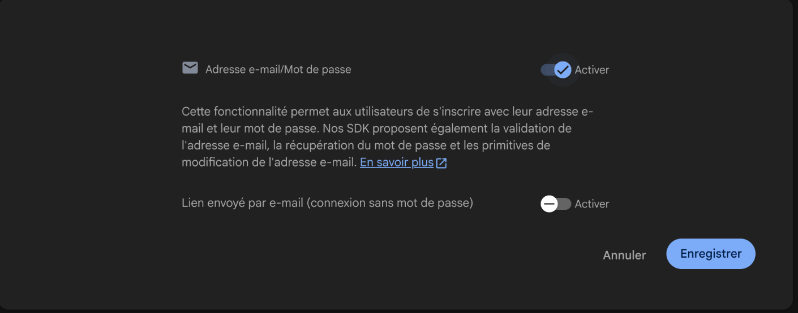
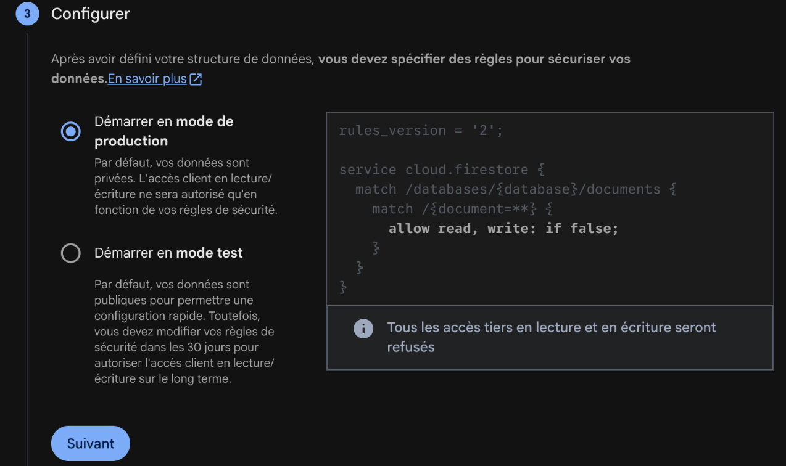
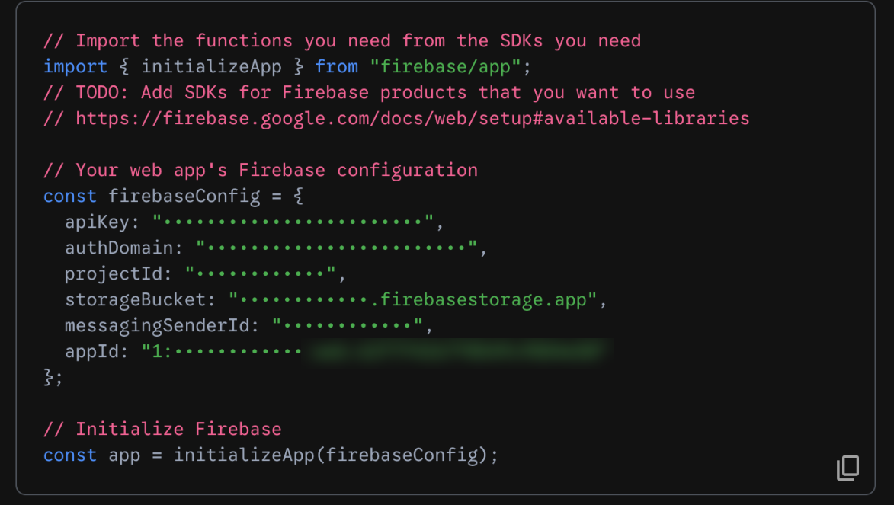
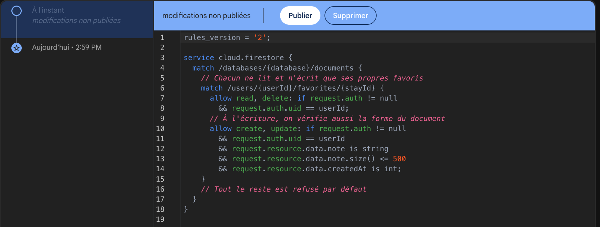
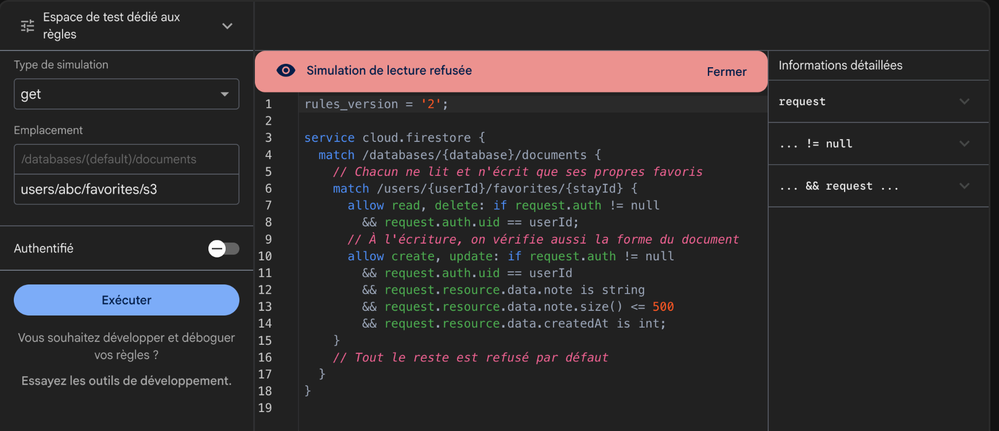

Jusqu'ici, les favoris vivent dans la mémoire de l'application. Ils disparaissent au redémarrage et ne suivent pas l'utilisateur d'un appareil à l'autre.
Firebase est un Backend as a Service (BaaS) de Google : le serveur existe, mais vous ne l'écrivez pas. Le même SDK JavaScript fonctionne sur le web et dans Expo Go.
users/{uid}/favorites range les favoris de chaque utilisateur


eur3 (Europe). Il ne pourra plus être modifié
</>firebaseConfig : ses valeurs iront dans .env.local. Je les ai masquées ici
npx expo install firebase \
@react-native-async-storage/async-storage
cp .env.example .env.local
firebase est le SDK JavaScript officiel, le même que sur le webAsyncStorage est un petit stockage clé-valeur sur le téléphone, l'équivalent de localStorage. Firebase y garde la session.env.local reçoit la configuration du projet. Le modèle d'Expo l'ignore déjà dans Git.env.localEXPO_PUBLIC_FIREBASE_API_KEY=
EXPO_PUBLIC_FIREBASE_AUTH_DOMAIN=
EXPO_PUBLIC_FIREBASE_PROJECT_ID=
EXPO_PUBLIC_FIREBASE_STORAGE_BUCKET=
EXPO_PUBLIC_FIREBASE_MESSAGING_SENDER_ID=
EXPO_PUBLIC_FIREBASE_APP_ID=firebaseConfig de la console dans .env.localEXPO_PUBLIC_ arrivent dans l'application. Relancez npm start après une modification// Les types publics de Firebase oublient cette fonction, pourtant
// bien présente sur mobile : on la déclare nous-mêmes
import { Persistence, ReactNativeAsyncStorage } from "firebase/auth";
declare module "firebase/auth" {
export function getReactNativePersistence(
storage: ReactNativeAsyncStorage,
): Persistence;
}getReactNativePersistence. La fonction existe, mais les types publics de Firebase l'oublient.d.ts ne contient que des types. Celui-ci complète le module firebase/auth pour TypeScriptimport AsyncStorage from "@react-native-async-storage/async-storage";
import { initializeApp } from "firebase/app";
import {
getAuth,
getReactNativePersistence,
initializeAuth,
} from "firebase/auth";
import { getFirestore } from "firebase/firestore";
import { Platform } from "react-native";
// Configuration publique du projet : elle identifie le projet mais ne
// protège rien. Ce sont les règles de sécurité qui protègent les
// données
const firebaseConfig = {
apiKey: process.env.EXPO_PUBLIC_FIREBASE_API_KEY,
authDomain: process.env.EXPO_PUBLIC_FIREBASE_AUTH_DOMAIN,
projectId: process.env.EXPO_PUBLIC_FIREBASE_PROJECT_ID,
storageBucket: process.env.EXPO_PUBLIC_FIREBASE_STORAGE_BUCKET,
messagingSenderId:
process.env.EXPO_PUBLIC_FIREBASE_MESSAGING_SENDER_ID,
appId: process.env.EXPO_PUBLIC_FIREBASE_APP_ID,
};
const app = initializeApp(firebaseConfig);
// Sur le web, la session est gardée par le navigateur. Sur mobile, il
// faut indiquer où la ranger : AsyncStorage
export const auth =
Platform.OS === "web"
? getAuth(app)
: initializeAuth(app, {
persistence: getReactNativePersistence(AsyncStorage),
});
export const db = getFirestore(app);initializeApp relie l'application au projet grâce à la configurationauth et db sont exportés pour les services, jamais pour les écransAsyncStorage : sans elle, l'utilisateur serait déconnecté à chaque redémarrage// L'utilisateur connecté, dans le vocabulaire de l'application
export type AppUser = {
uid: string;
email: string;
};User de Firebase, mais ce type à nousimport { FirebaseError } from "firebase/app";
import {
createUserWithEmailAndPassword,
onAuthStateChanged,
signInWithEmailAndPassword,
signOut as firebaseSignOut,
User,
} from "firebase/auth";
import { AppUser } from "@/models/user";
import { auth } from "@/services/firebase";
function toAppUser(user: User): AppUser {
return { uid: user.uid, email: user.email ?? "" };
}
// Prévient à chaque connexion ou déconnexion. Renvoie la fonction qui
// arrête l'écoute
export function subscribeToAuth(
onChange: (user: AppUser | null) => void,
) {
return onAuthStateChanged(auth, (user) =>
onChange(user ? toAppUser(user) : null),
);
}
export async function signUp(email: string, password: string) {
await createUserWithEmailAndPassword(auth, email, password);
}
export async function signIn(email: string, password: string) {
await signInWithEmailAndPassword(auth, email, password);
}
export async function signOut() {
await firebaseSignOut(auth);
}
// Traduit une erreur de Firebase en message pour l'utilisateur
export function authErrorMessage(error: unknown): string {
const code = error instanceof FirebaseError ? error.code : "";
switch (code) {
case "auth/invalid-email":
return "Adresse e-mail invalide.";
case "auth/invalid-credential":
return "E-mail ou mot de passe incorrect.";
case "auth/email-already-in-use":
return "Un compte existe déjà avec cette adresse.";
case "auth/weak-password":
return "Mot de passe trop court : 6 caractères au moins.";
default:
return "Une erreur est survenue. Réessayez.";
}
}onAuthStateChanged prévient à chaque connexion ou déconnexion, y compris au démarrage si une session existeauthErrorMessage traduit les codes d'erreur de Firebase en messages lisiblesimport { createContext, ReactNode, useEffect, useState } from "react";
import { AppUser } from "@/models/user";
import { subscribeToAuth } from "@/services/auth-service";
export type AuthContextValue = {
user: AppUser | null;
// true tant que Firebase n'a pas dit si une session existe
initializing: boolean;
};
export const AuthContext = createContext<AuthContextValue | null>(
null,
);
export function AuthProvider({ children }: { children: ReactNode }) {
const [user, setUser] = useState<AppUser | null>(null);
const [initializing, setInitializing] = useState(true);
useEffect(() => {
// L'écoute commence au montage et s'arrête au démontage
const unsubscribe = subscribeToAuth((current) => {
setUser(current);
setInitializing(false);
});
return unsubscribe;
}, []);
return (
<AuthContext.Provider value={{ user, initializing }}>
{children}
</AuthContext.Provider>
);
}initializing vaut true tant que Firebase n'a pas répondu. Sans lui, l'écran de connexion clignoterait au démarrageuseAuthimport { useContext } from "react";
import {
AuthContext,
AuthContextValue,
} from "@/context/auth-context";
// Seule porte d'entrée vers l'utilisateur connecté
export function useAuth(): AuthContextValue {
const context = useContext(AuthContext);
if (!context) {
throw new Error("useAuth doit être utilisé dans un AuthProvider");
}
return context;
}useFavoritesimport { useState } from "react";
import {
ActivityIndicator,
Pressable,
StyleSheet,
Text,
TextInput,
View,
} from "react-native";
import { authErrorMessage } from "@/services/auth-service";
type AuthFormProps = {
submitLabel: string;
onSubmit: (email: string, password: string) => Promise<void>;
};
// Formulaire commun à la connexion et à l'inscription
export function AuthForm({ submitLabel, onSubmit }: AuthFormProps) {
const [email, setEmail] = useState("");
const [password, setPassword] = useState("");
const [error, setError] = useState("");
const [sending, setSending] = useState(false);
const submit = async () => {
setError("");
setSending(true);
try {
await onSubmit(email.trim(), password);
} catch (e) {
setError(authErrorMessage(e));
} finally {
setSending(false);
}
};
return (
<View style={styles.form}>
<TextInput
value={email}
onChangeText={setEmail}
placeholder="E-mail"
keyboardType="email-address"
autoCapitalize="none"
autoComplete="email"
style={styles.input}
/>
<TextInput
value={password}
onChangeText={setPassword}
placeholder="Mot de passe"
secureTextEntry
style={styles.input}
/>
{error !== "" && <Text style={styles.error}>{error}</Text>}
<Pressable
onPress={submit}
disabled={sending}
style={styles.button}
>
{sending ? (
<ActivityIndicator color="#FFFFFF" />
) : (
<Text style={styles.buttonLabel}>{submitLabel}</Text>
)}
</Pressable>
</View>
);
}
const styles = StyleSheet.create({
form: { gap: 12 },
input: {
borderWidth: 1,
borderColor: "#D9DCEA",
borderRadius: 8,
padding: 12,
fontSize: 16,
backgroundColor: "#FFFFFF",
},
error: { color: "#C2410C" },
button: {
backgroundColor: "#0B7A70",
borderRadius: 8,
padding: 14,
alignItems: "center",
},
buttonLabel: { color: "#FFFFFF", fontWeight: "700", fontSize: 16 },
});onSubmit)secureTextEntry masque le mot de passe, keyboardType="email-address" affiche le clavier adaptéimport { StyleSheet, Text, View } from "react-native";
import { AuthForm } from "@/components/auth-form";
import { signUp } from "@/services/auth-service";
export default function SignUpScreen() {
return (
<View style={styles.screen}>
<Text style={styles.title}>Créer un compte</Text>
<AuthForm submitLabel="S'inscrire" onSubmit={signUp} />
</View>
);
}
const styles = StyleSheet.create({
screen: {
flex: 1,
width: "100%",
maxWidth: 420,
alignSelf: "center",
padding: 24,
gap: 16,
},
title: { fontSize: 24, fontWeight: "800" },
});(auth) range les écrans réservés aux visiteurs non connectés. Il n'a pas de navigateur à lui : la pile racine les afficheimport { Link } from "expo-router";
import { StyleSheet, Text, View } from "react-native";
import { AuthForm } from "@/components/auth-form";
import { signIn } from "@/services/auth-service";
export default function SignInScreen() {
return (
<View style={styles.screen}>
<Text style={styles.title}>Connexion</Text>
<AuthForm submitLabel="Se connecter" onSubmit={signIn} />
<Link href="/sign-up" style={styles.link}>
Pas encore de compte ? Créer un compte
</Link>
</View>
);
}
const styles = StyleSheet.create({
screen: {
flex: 1,
width: "100%",
maxWidth: 420,
alignSelf: "center",
padding: 24,
gap: 16,
},
title: { fontSize: 24, fontWeight: "800" },
link: { color: "#0B7A70", fontSize: 16 },
});/sign-in : les parenthèses du groupe n'apparaissent pas dans l'URLimport { Pressable, StyleSheet, Text, View } from "react-native";
import { useAuth } from "@/hooks/use-auth";
import { signOut } from "@/services/auth-service";
export default function AccountScreen() {
const { user } = useAuth();
return (
<View style={styles.screen}>
<Text style={styles.label}>Connecté en tant que</Text>
<Text style={styles.email}>{user?.email}</Text>
<Pressable onPress={signOut} style={styles.button}>
<Text style={styles.buttonLabel}>Se déconnecter</Text>
</Pressable>
</View>
);
}
const styles = StyleSheet.create({
screen: { padding: 24, gap: 8 },
label: { fontSize: 15, color: "#5A5F80" },
email: { fontSize: 18, fontWeight: "700" },
button: {
marginTop: 16,
alignSelf: "flex-start",
borderWidth: 1,
borderColor: "#C2410C",
borderRadius: 8,
paddingVertical: 10,
paddingHorizontal: 16,
},
buttonLabel: { color: "#C2410C", fontWeight: "700" },
});useAuth fournit l'utilisateur connectésignOut déconnecte. La redirection vers la connexion se fera toute seuleimport Ionicons from "@expo/vector-icons/Ionicons";
import { Tabs } from "expo-router/js-tabs";
const ACTIVE = "#0B7A70";
const INACTIVE = "#8C90B4";
export default function TabsLayout() {
return (
<Tabs
screenOptions={{
tabBarActiveTintColor: ACTIVE,
tabBarInactiveTintColor: INACTIVE,
}}
>
<Tabs.Screen
name="index"
options={{
title: "Séjours",
tabBarIcon: ({ focused, size }) => (
<Ionicons
name="bed-outline"
size={size}
color={focused ? ACTIVE : INACTIVE}
/>
),
}}
/>
<Tabs.Screen
name="favorites"
options={{
title: "Favoris",
tabBarIcon: ({ focused, size }) => (
<Ionicons
name="heart-outline"
size={size}
color={focused ? ACTIVE : INACTIVE}
/>
),
}}
/>
<Tabs.Screen
name="account"
options={{
title: "Compte",
tabBarIcon: ({ focused, size }) => (
<Ionicons
name="person-outline"
size={size}
color={focused ? ACTIVE : INACTIVE}
/>
),
}}
/>
</Tabs>
);
}account est nouveauimport { Stack } from "expo-router";
import { StateMessage } from "@/components/state-message";
import { AuthProvider } from "@/context/auth-context";
import { FavoritesProvider } from "@/context/favorites-context";
import { useAuth } from "@/hooks/use-auth";
// Un séjour ouvert directement par son URL (lien partagé) est posé
// sur les onglets : sa flèche de retour y mène
export const unstable_settings = { anchor: "(tabs)" };
export default function RootLayout() {
return (
<AuthProvider>
<FavoritesProvider>
<RootStack />
</FavoritesProvider>
</AuthProvider>
);
}
// Sous les Providers : il peut lire l'utilisateur connecté
function RootStack() {
const { user, initializing } = useAuth();
if (initializing) return <StateMessage loading />;
return (
<Stack screenOptions={{ headerTransparent: false }}>
<Stack.Protected guard={user !== null}>
<Stack.Screen
name="(tabs)"
options={{ headerShown: false, title: "Séjours" }}
/>
<Stack.Screen name="stays/[id]" />
</Stack.Protected>
<Stack.Protected guard={user === null}>
<Stack.Screen
name="(auth)/sign-in"
options={{ title: "Connexion" }}
/>
<Stack.Screen
name="(auth)/sign-up"
options={{ title: "Inscription" }}
/>
</Stack.Protected>
</Stack>
);
}AuthProvider entoure FavoritesProvider : les favoris auront besoin de l'utilisateurRootStack lit useAuth. Il est donc placé sous les ProvidersStack.Protected n'ouvre ses écrans que si guard vaut true. À la connexion ou à la déconnexion, Expo Router redirige tout seul : un visiteur arrive sur /sign-in// Un favori annoté : un séjour gardé par l'utilisateur, avec sa note
export type Favorite = {
stayId: string;
note: string;
createdAt: number;
};createdAt permet d'afficher les plus récents en premierimport {
collection,
deleteDoc,
doc,
DocumentData,
onSnapshot,
orderBy,
query,
setDoc,
updateDoc,
} from "firebase/firestore";
import { Favorite } from "@/models/favorite";
import { db } from "@/services/firebase";
// Chaque utilisateur a sa propre collection : users/{uid}/favorites
function favoritesOf(uid: string) {
return collection(db, "users", uid, "favorites");
}
// Traduit un document Firestore dans le vocabulaire du modèle
function toFavorite(id: string, data: DocumentData): Favorite {
return {
stayId: id,
note: data.note ?? "",
createdAt: data.createdAt ?? 0,
};
}
// Lecture en temps réel : onChange est rappelée à chaque modification.
// Renvoie la fonction qui arrête l'écoute
export function subscribeToFavorites(
uid: string,
onChange: (favorites: Favorite[]) => void,
onError: () => void,
) {
const favoritesQuery = query(
favoritesOf(uid),
orderBy("createdAt", "desc"),
);
return onSnapshot(
favoritesQuery,
(snapshot) =>
onChange(snapshot.docs.map((d) => toFavorite(d.id, d.data()))),
onError,
);
}
// Créer : l'identifiant du document est celui du séjour
export async function addFavorite(uid: string, stayId: string) {
await setDoc(doc(favoritesOf(uid), stayId), {
note: "",
createdAt: Date.now(),
});
}
// Modifier
export async function updateFavoriteNote(
uid: string,
stayId: string,
note: string,
) {
await updateDoc(doc(favoritesOf(uid), stayId), { note });
}
// Supprimer
export async function removeFavorite(uid: string, stayId: string) {
await deleteDoc(doc(favoritesOf(uid), stayId));
}onSnapshot lit en temps réel : la fonction est rappelée à chaque modification, sur tous les appareils connectéssetDoc, updateDoc et deleteDoc créent, modifient et suppriment : c'est un CRUD complettoFavorite traduit un document dans le vocabulaire du modèleimport { useEffect, useState } from "react";
import { Favorite } from "@/models/favorite";
import { subscribeToFavorites } from "@/services/favorites-service";
export type FavoritesState =
| { status: "loading" }
| { status: "error"; message: string }
| { status: "success"; favorites: Favorite[] };
// Contrôleur : écoute les favoris de l'utilisateur tant que le
// composant est monté
export function useRealtimeFavorites(uid: string | null) {
const [state, setState] = useState<FavoritesState>({
status: "loading",
});
useEffect(() => {
if (!uid) return;
const unsubscribe = subscribeToFavorites(
uid,
(favorites) => setState({ status: "success", favorites }),
() =>
setState({
status: "error",
message: "Favoris indisponibles",
}),
);
// Au démontage (ou si l'utilisateur change), on arrête l'écoute
return unsubscribe;
}, [uid]);
return state;
}useEffect, au montageuseEffect et sa fonction de nettoyage suivent ce cycleuseFocusEffect recharge un écran qui redevient visible. AppState signale le retour de l'application au premier planimport { createContext, ReactNode } from "react";
import { useAuth } from "@/hooks/use-auth";
import { useRealtimeFavorites } from "@/hooks/use-realtime-favorites";
import { Favorite } from "@/models/favorite";
import {
addFavorite,
removeFavorite,
updateFavoriteNote,
} from "@/services/favorites-service";
export type FavoritesContextValue = {
favorites: Favorite[];
isFavorite: (id: string) => boolean;
noteOf: (id: string) => string;
toggleFavorite: (id: string) => void;
updateNote: (id: string, note: string) => Promise<void>;
};
export const FavoritesContext =
createContext<FavoritesContextValue | null>(null);
export function FavoritesProvider({
children,
}: {
children: ReactNode;
}) {
const { user } = useAuth();
const state = useRealtimeFavorites(user ? user.uid : null);
const favorites =
user && state.status === "success" ? state.favorites : [];
const isFavorite = (id: string) =>
favorites.some((f) => f.stayId === id);
const noteOf = (id: string) =>
favorites.find((f) => f.stayId === id)?.note ?? "";
// Firestore prévient ensuite tous les écrans : pas d'état à modifier
const toggleFavorite = (id: string) => {
if (!user) return;
if (isFavorite(id)) void removeFavorite(user.uid, id);
else void addFavorite(user.uid, id);
};
const updateNote = async (id: string, note: string) => {
if (user) await updateFavoriteNote(user.uid, id, note);
};
return (
<FavoritesContext.Provider
value={{
favorites,
isFavorite,
noteOf,
toggleFavorite,
updateNote,
}}
>
{children}
</FavoritesContext.Provider>
);
}toggleFavorite écrit dans Firestore. onSnapshot prévient ensuite tous les écransimport { useState } from "react";
import {
Pressable,
StyleSheet,
Text,
TextInput,
View,
} from "react-native";
import { useFavorites } from "@/hooks/use-favorites";
type FavoriteNoteProps = { stayId: string };
// La note d'un favori : lue dans le Context, enregistrée dans Firestore
export function FavoriteNote({ stayId }: FavoriteNoteProps) {
const { isFavorite, noteOf, updateNote } = useFavorites();
const [note, setNote] = useState(noteOf(stayId));
const [message, setMessage] = useState("");
if (!isFavorite(stayId)) {
return (
<Text style={styles.hint}>
Ajoutez ce séjour à vos favoris pour l'annoter.
</Text>
);
}
const save = async () => {
try {
await updateNote(stayId, note.trim());
setMessage("Note enregistrée");
} catch {
setMessage("Échec de l'enregistrement");
}
};
return (
<View style={styles.box}>
<Text style={styles.label}>Ma note</Text>
<TextInput
value={note}
onChangeText={setNote}
placeholder="Pourquoi ce séjour vous plaît…"
multiline
maxLength={500}
style={styles.input}
/>
<Pressable onPress={save} style={styles.button}>
<Text style={styles.buttonLabel}>Enregistrer</Text>
</Pressable>
{message !== "" && <Text style={styles.hint}>{message}</Text>}
</View>
);
}
const styles = StyleSheet.create({
box: { gap: 8, marginTop: 8 },
label: { fontSize: 15, fontWeight: "700" },
input: {
minHeight: 80,
borderWidth: 1,
borderColor: "#D9DCEA",
borderRadius: 8,
padding: 12,
fontSize: 16,
textAlignVertical: "top",
backgroundColor: "#FFFFFF",
},
button: {
alignSelf: "flex-start",
backgroundColor: "#0B7A70",
borderRadius: 8,
paddingVertical: 10,
paddingHorizontal: 16,
},
buttonLabel: { color: "#FFFFFF", fontWeight: "700" },
hint: { fontSize: 14, color: "#5A5F80" },
});await attend la réponse : on affiche une confirmation ou une erreurreturn conditionnel, jamais aprèsimport { Stack, useLocalSearchParams } from "expo-router";
import {
Image,
ScrollView,
StyleSheet,
Text,
View,
} from "react-native";
import { FavoriteNote } from "@/components/favorite-note";
import { StateMessage } from "@/components/state-message";
import { useStay } from "@/hooks/use-stay";
import { Stay } from "@/models/stay";
export default function StayScreen() {
const { id } = useLocalSearchParams<{ id: string }>();
const state = useStay(id);
if (state.status === "loading") return <StateMessage loading />;
if (state.status === "not-found")
return <StateMessage message="Ce séjour est introuvable." />;
return <StayDetails stay={state.stay} />;
}
function StayDetails({ stay }: { stay: Stay }) {
return (
<ScrollView contentContainerStyle={styles.content}>
<Stack.Screen options={{ title: stay.title }} />
<Image source={{ uri: stay.imageUrl }} style={styles.image} />
<View style={styles.body}>
<Text style={styles.title}>{stay.title}</Text>
<Text style={styles.city}>
{stay.city} · {stay.pricePerNight} € / nuit
</Text>
<FavoriteNote stayId={stay.id} />
</View>
</ScrollView>
);
}
const styles = StyleSheet.create({
content: { width: "100%", maxWidth: 800, alignSelf: "center" },
image: { width: "100%", aspectRatio: 16 / 9 },
body: { padding: 16, gap: 8 },
title: { fontSize: 26, fontWeight: "800" },
city: { fontSize: 17, color: "#5A5F80" },
});FavoriteNote est ajoutéimport { Link } from "expo-router";
import { SectionList, StyleSheet, Text, View } from "react-native";
import { StateMessage } from "@/components/state-message";
import { useFavorites } from "@/hooks/use-favorites";
import { useStays } from "@/hooks/use-stays";
import { groupByCity } from "@/models/stay";
export default function FavoritesScreen() {
const { state } = useStays();
const { isFavorite, noteOf } = useFavorites();
if (state.status !== "success")
return <StateMessage loading={state.status === "loading"} />;
const sections = groupByCity(
state.stays.filter((stay) => isFavorite(stay.id)),
);
return (
<SectionList
sections={sections}
keyExtractor={(stay) => stay.id}
renderSectionHeader={({ section }) => (
<Text style={styles.city}>{section.title}</Text>
)}
renderItem={({ item }) => (
<View style={styles.row}>
<Link
href={{
pathname: "/stays/[id]",
params: { id: item.id },
}}
style={styles.item}
>
{item.title}
</Link>
{noteOf(item.id) !== "" && (
<Text style={styles.note}>{noteOf(item.id)}</Text>
)}
</View>
)}
ListEmptyComponent={
<Text style={styles.item}>Aucun favori pour le moment.</Text>
}
contentContainerStyle={styles.list}
/>
);
}
const styles = StyleSheet.create({
list: { padding: 16 },
city: {
fontSize: 14,
fontWeight: "700",
textTransform: "uppercase",
color: "#0B7A70",
marginTop: 16,
},
row: { paddingVertical: 8, gap: 2 },
item: { fontSize: 17 },
note: { fontSize: 14, color: "#5A5F80" },
});allow read, write: if true; (le « mode test ») laisse n'importe qui lire, modifier et effacer toutes vos données. Ne la publiez jamais, même pour un essai.
rules_version = '2';
service cloud.firestore {
match /databases/{database}/documents {
// Chacun ne lit et n'écrit que ses propres favoris
match /users/{userId}/favorites/{stayId} {
allow read, delete: if request.auth != null
&& request.auth.uid == userId;
// À l'écriture, on vérifie aussi la forme du document
allow create, update: if request.auth != null
&& request.auth.uid == userId
&& request.resource.data.note is string
&& request.resource.data.note.size() <= 500
&& request.resource.data.createdAt is int;
}
// Tout le reste est refusé par défaut
}
}match désigne un chemin. {userId} capture l'identifiant de l'utilisateur dans ce cheminrequest.auth est l'utilisateur qui fait la demande : chacun n'accède qu'à ses favorisrequest.resource.data est le document envoyé : on vérifie sa forme avant de l'accepter
firestore.rulesfirestore.rules dans le dépôt, identique aux règles publiées
get de users/abc/favorites/s3 sans authentification : refuséabc : acceptépermission-denied dans l'application signifie que les règles ont refusé la demande. Vérifiez le chemin et l'utilisateur connecté avant de les assouplir.Stack.Protected séparent les écrans des visiteurs de ceux des utilisateurs connectésonSnapshot lit en temps réel. On s'abonne au montage, on se désabonne au démontage